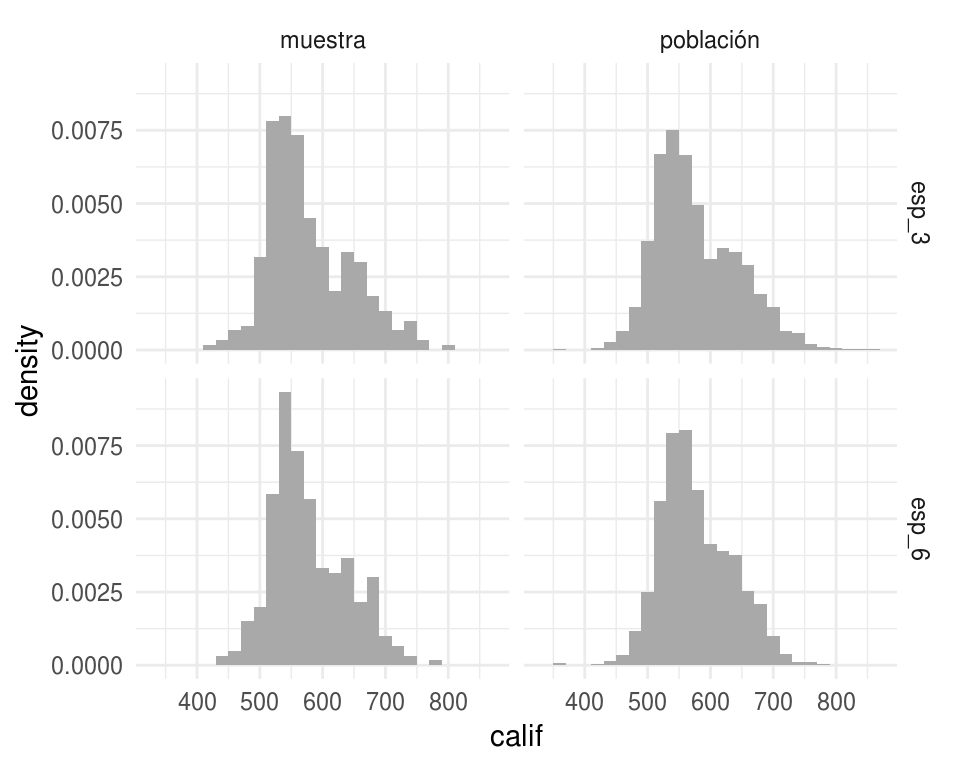
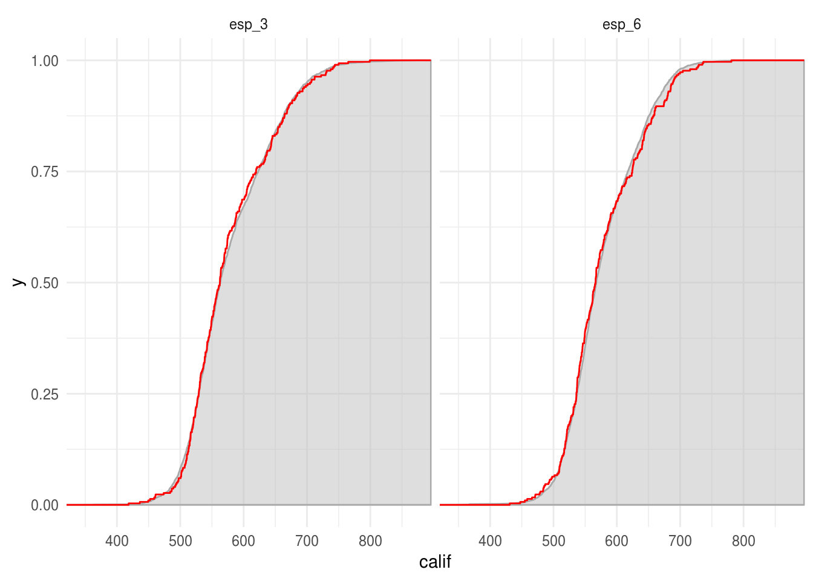
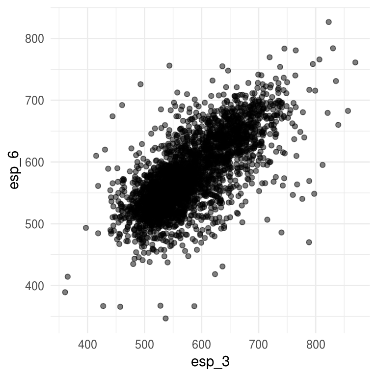

6.2 El principio del plug-in
Al usar la media observada para describir a la población estamos aplicando el principio del plug-in que dice que una característica dada de una distribución puede ser aproximada por la equivalente evaluada en la distribución empírica de una muestra aleatoria.
Función de distribución empírica
Dada una muestra aleatoria de tamaño \(n\) de una distribución de probabilidad \(P\), la función de distribución empírica \(P_n\) se define como la distribución que asigna probabilidad \(1/n\) a cada valor \(x_i\) con \(i=1,2,...,n\).
En otras palabras, \(P_n\) asigna a un conjunto \(A\) en el espacio muestral de \(x\) la probabilidad empírica:
\[P_n(A)=\#\{x_i \in A \}/n\]
La función de distribución empírica \(P_n\) es una estimación de la distribución completa \(P\), por lo que una manera inmediata de estimar aspectos de \(P\) (e.g media o mediana) es calcular el aspecto correspondiente de \(P_n\).
En cuanto a la teoría el principio del plug-in está soportado por el teorema de Glivenko Cantelli:
Sea \(X_1,...,X_n\) una muestra aleatoria de una distribución \(P\), con distribución empírica \(P_n\) entonces \[\sup_{x \in \mathcal{R}}|P_n(x)-P(x)|\to_p0\] casi seguro.
Regresando al ejemplo de las escuelas, comparemos la distribución poblacional y la distribución empírica.
primaria_long <- primaria %>%
mutate(clase = "población") %>%
rbind(primaria_muestra) %>%
gather(grado, calif, esp_3:esp_6)
ggplot(primaria_long, aes(x = calif)) +
geom_histogram(aes(y = ..density..), binwidth = 20, fill = "darkgray") +
facet_grid(grado ~ clase)
Podemos comparar la función de distribución acumulada empírica y la función de distribución acumulada poblacional:
En la siguiente gráfica la curva roja representa la función de distribución acumulada empírica y la curva con relleno gris la función de distribución acumulada poblacional.
ggplot() +
stat_ecdf(data = filter(primaria_long, clase == "población"),
aes(x = calif, ymin=0, ymax=..y..), geom = "ribbon", pad = TRUE, alpha = 0.5,
fill = "gray", color = "darkgray") +
stat_ecdf(data = filter(primaria_long, clase == "muestra"),
aes(x = calif), geom = "step", color = "red") +
facet_grid(~ grado) +
labs(color = "")
Cuando la variable de interés toma pocos valores es fácil ver la distribución empírica, supongamos que la medición de las unidades que nos interesa es la variable tipo de escuela, entonces la distribución empírica en la muestra es
table(primaria_muestra$tipo) / n
#>
#> GENERAL PARTICULAR
#> 0.677 0.323Vale la pena notar que pasar de la muestra desagregada a la distribución empírica (lista de valores y la proporción que ocurre cada una en la muestra) no conlleva ninguna pérdida de información:
- el vector de frecuencias observadas es un estadístico suficiente para la verdadera distribución.
Esto quiere decir que toda la información de \(P\) contenida en el vector de observaciones \(\textbf{x}\) está también contenida en \(P_n\).
Nota: el teorema de suficiencia asume que las observaciones \(\textbf{x}\) son una muestra aleatoria de la distribución \(P\), este no es siempre el caso (e.g. si tenemos una serie de tiempo).
6.2.0.1 Parámetros y estadísticas
Cuando aplicamos teoría estadística a problemas reales, es común que las respuestas estén dadas en términos de distribuciones de probabilidad. Por ejemplo, podemos preguntarnos que tan correlacionados están los resultados de las pruebas de español correspondientes a 3o y 6o. Si conocemos la distribución de probabilidad \(P\) contestar esta pregunta es simplemente cuestión de aritmética, el coeficiente de correlación poblacional esta dado por:
\[corr(y,z) = \frac{\sum_{j=1}^{N}(Y_j - \mu_y)(Z_j-\mu_z)} {[\sum_{j=1}^{N}(Y_j - \mu_y)^2\sum_{j=1}^{N}(Z_j - \mu_z)^2]^{1/2}}\]
en nuestro ejemplo \((Y_j,Z_j)\) son el j-ésimo punto en la población de escuelas primarias \(\mathcal{X}\), \(\mu_y=\sum Y_j/3311\) y \(\mu_z=\sum Z_j/3311\).
ggplot(primaria, aes(x = esp_3, y = esp_6)) +
geom_point(alpha = 0.5)
cor(primaria$esp_3, primaria$esp_6) %>% round(2)
#> [1] 0.72Si no tenemos un censo debemos inferir, podríamos estimar la correlación \(corr(y,z)\) a través del coeficiente de correlación muestral:
\[\hat{corr}(y,z) = \frac{\sum_{j=1}^{n}(y_j - \hat{\mu}_y)(z_j-\hat{\mu}_z)} {[\sum_{j=1}^{n}(y_j - \hat{\mu}_y)^2\sum_{j=1}^{n}(z_j - \hat{\mu}_z)^2]^{1/2}}\]
recordando que la distribución empírica es una estimación de la distribución completa.
cor(primaria_muestra$esp_3, primaria_muestra$esp_6)
#> [1] 0.682Al igual que la media esto es una estimación plug-in. Otros ejemplos son:
- Supongamos que nos interesa estimar la mediana de las calificaciones de español para 3^o de primaria:
median(primaria_muestra$esp_3)
#> [1] 562- Supongamos que nos interesa estimar la probabilidad de que la calificación de español de una escuela sea mayor a 700:
\[\theta=\frac{1}{N}\sum_{j=1}^N I_{\{Y_i>700\}}\]
donde \(I_{\{\cdot\}}\) es la función indicadora.
Hacemos la estimación plug-in \(\hat{\theta}\):
sum(primaria_muestra$esp_3 > 700) / n
#> [1] 0.0567Ejemplo: dado
Observamos 100 lanzamientos de un dado, obteniendo la siguiente distribución empírica:
dado <- read.table("data/dado.csv", header=TRUE, quote="\"")
prop.table(table(dado$x))
#>
#> 1 2 3 4 5 6
#> 0.13 0.19 0.10 0.17 0.14 0.27En este caso no tenemos un censo, solo contamos con la muestra. Una pregunta de inferencia que surge de manera natural es si el dado es justo, esto es, si la distribución que generó esta muestra tiene una distribución \(P = (1/6, 1/6, 1/6,1/6, 1/6, 1/6)\).
Para resolver esta pregunta, debemos hacer inferencia de la distribución empírica.
Antes de proseguir repasemos dos conceptos importantes: parámetros y estadísticos:
Un parámetro es una función de la distribución de probabilidad \(\theta=t(P)\), mientras que una estadística es una función de la muestra \(\textbf{x}\).
Por ejemplo, la \(corr(x,y)\) es un parámetro de \(P\) y \(\hat{corr}(x,y)\) es una estadística con base en \(\textbf{x}\) y \(\textbf{y}\).
Entonces:
El principio del plug-in es un método para estimar parámetros a partir de muestras; la estimación plug-in de un parámetro \(\theta=t(P)\) se define como: \[\hat{\theta}=t(P_n).\]
Es decir, estimamos la función \(\theta = t(P)\) de la distribución de probabilidad \(P\) con la misma función aplicada en la distribución empírica \(\hat{\theta}=t(P_n)\).
¿Qué tan bien funciona el principio del plug-in?
Suele ser muy bueno cuando la única información disponible de \(P\) es la muestra \(\textbf{x}\), bajo esta circunstancia \(\hat{\theta}=t(P_n)\) no puede ser superado como estimador de \(\theta=t(P)\), al menos no en el sentido asintótico de teoría estadística \((n\to\infty)\).
El principio del plug-in provee de una estimación más no habla de precisión: usaremos el bootstrap para estudiar el sesgo y el error estándar del estimador plug-in \(\hat{\theta}=t(P_n)\).